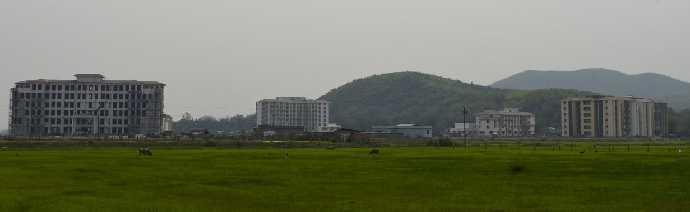
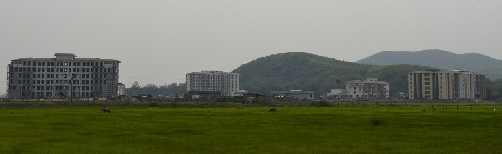

Indian Institute of Information Technology Guwahati (IIITG) is an institution of National Importance under an Act of Parliament (THE INDIAN INSTITUTES OF INFORMATION TECHNOLOGY (PUBLIC-PRIVATE PARTNERSHIP) ACT, 2017). It offers B.Tech. courses in Electronics and Communication Engineering (ECE) and Computer Science Engineering (CSE), M.Tech. courses in CSE and ECE and runs PhD programmes in ECE, CSE, Mathematics, and Humanities and Social Sciences (HSS). IIITG started operations in August 2013 with B.Tech programmes in CSE and ECE. The first batch of B.Tech. students completed their programme in May 2017. The first convocation of the Institute was held on May 15 2018.The institute has further received funding for infrastructural development and academic improvement under TEQIP III.
IIITG is one of the 20 IIITs set up by the Central Govt. in PPP mode. A Bill (Act of Parliament) to declare all the PPP-IIITs (including IIITG) as Institutes of National Importance was passed by both the houses of the Indian parliament in July, 2017.
In its very first year when it became eligible, IIITG has got a rank of 66 in the Engineering category of NIRF 2020. What is even more notable is that it is ranked the highest among all MHRD IIITs! This includes even the older, Govt. funded IIITs! We were not eligible for ranking in the Overall category as we have less than 1000 students.
IIITG strives to be attentive to academic needs of every student. Classes are conveniently scheduled between 9 A.M. to 5 P. M. Every class room is air-conditioned and has projection facilities. For online classes, we are subscribing to a Learning Management System (LMS) through which we deliver our lectures. For online examinations, we have subscribed to another Cloud based software. An Institute-wide wi-fi system provides Internet access throughout the Institute. Further, DG power back up is available in case of power failure. The permanent campus has been constructed on 67 acres of land about 4 km from Guwahati airport.
The foundation stone for its permanent campus was laid on 19 January, 2016 by Hon’ble Prime Minister Shri Narendra Modi in the august presence of former Governor of Assam Shri Janaki Ballabh Patnaik, former Chief Minister of Assam Shri Tarun Gogoi and former Minister of Human Resources & Development Smt Smriti Zubin Irani. The institute moved to its permanent campus in July, 2018. Prof. Gautam Barua former Director of IIT Guwahati is the Director of the Institute. For more details click
here
IIITG strength
Faculty:
1.CSE
Professor (on contract) - 1; Assoc. Professor - 4; Asst. Professor - 16
2. ECE
Assoc. Professor - 3; Asst. Professor - 14
3. HSS
Assoc. Professor - 1; Asst Professor - 5
4. Maths
Assoc. Professor - 1; Asst. Professor - 4
Total - Professor (on contract) - 1; Assoc. Professor - 9; Asst. Professor - 39
Staff:
Registrar 1; Asst. Registrar 1; Superintending Engineer 1; Senior Superintendent 6; Senior Technical Superintendent 4; Junior Technical Superintendent 2; Junior Accounts Officer 1; Junior Assistant 9; Library Information Officer 2; Total 27
Partners of IIITG:
1. MHRD, Govt. of India
2. Govt. of Assam
3. Tata Consultancy Services
4. Oil India Limited
5. Srei Infrastructure Finance Ltd.
6. Amtron Ltd.
Financial Contributions of Partners in setting up the Institute:
1. MHRD, Govt. of India : 57.5%
2. Govt. of Assam : 35 %
3. Industry Partners together : 7.5 %
Visitor Information
A map of the campus is here
Visitor Information
Location
Contact Us


 
